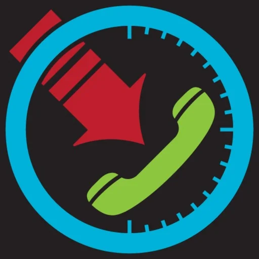
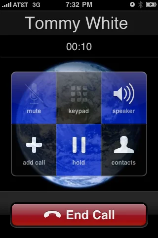

Make it your own
Choose a caller name, photo, wallpaper, and sound.
Classic iPhone nostalgia / AVAILABLE NOW
A call from the good old days.
A playful throwback to the original iPhone incoming call screen, rebuilt for modern iPhones. Customize the setup, preview your fake call, and enjoy a little piece of App Store history. These are simulated calls, not real phone calls.
iPhone · Check the App Store for device requirements.

A LITTLE LOOK INSIDE
Choose a caller name, photo, wallpaper, and sound.
Schedule your fake call with a timer or a custom time, and check your setup with a live preview.
Try fake FaceTime with custom incoming and callback videos, or import your own audio.

READY WHEN YOU ARE
Visit the App Store for more screenshots, device compatibility, and the latest version.
Download on the App Store